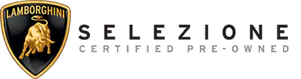
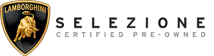

Programma selezione usato Lamborghini
 

Il programma Lamborghini Certified Pre-Owned consiste in un insieme di controlli,
svolti per certificare la massima affidabilità all'acquirente.
Tutti i controlli vengono svolti da tecnici specializzati, e le sostituzioni avvengono
solo con ricambi originali Lamborghini.
Grazie al programma Selezione è possibile usufruire della garanzia Lamborghini e del
servizio di assistenza stradale fino a 24 mesi.
Quali requisiti sono necessari per far parte del programma Certified Pre-Owned?
- Deve aver percorso meno di 70.000 km/43.500 miglia (100.000 km/62.000 miglia nel caso di Urus)
- Deve essere stata utilizzata per meno di 84 mesi (120 per Urus)
- Deve essere stata sottoposta agli interventi di manutenzione ordinaria previsti da Automobili Lamborghini
- avere superato un attento test di controllo secondo una specifica check-list
Garanzie della selezione Certified Pre-Owned
Ogni vettura del programma Selezione Certified Pre-Owned è coperta da una garanzia Lamborghini aggiuntiva che va da un minimo di 12 a un massimo di 24 mesi.
La garanzia copre i componenti e la manodopera e assicura che tutte le operazioni vengano eseguite da tecnici Lamborghini qualificati utilizzando solo componenti originali.
Per garantirti la massima serenità, ogni vettura del programma Selezione Certified Pre-Owned può usufruire dell'assistenza stradale per tutta la durata della garanzia.
Il servizio è disponibile 24 ore su 24, 365 giorni all'anno